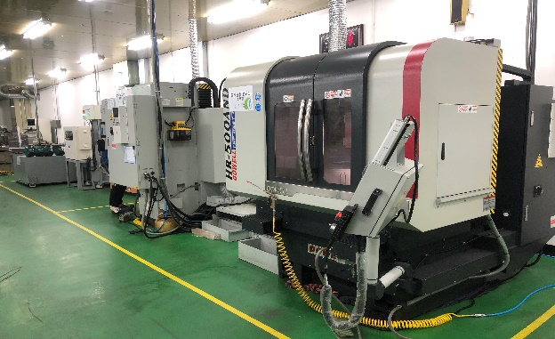
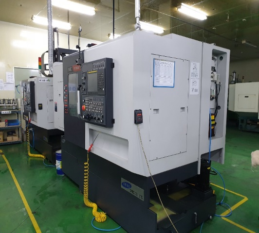
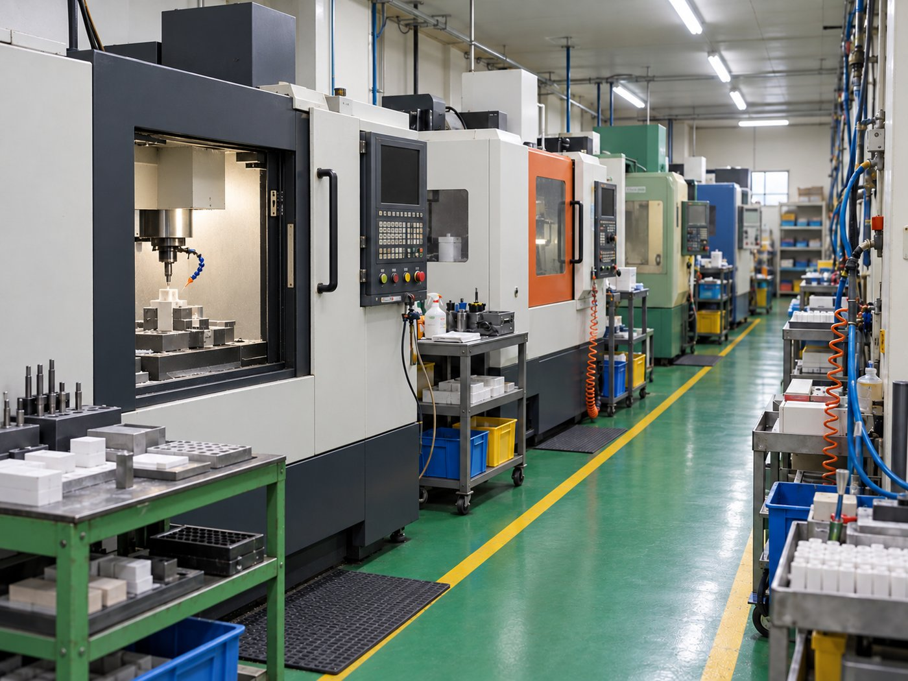
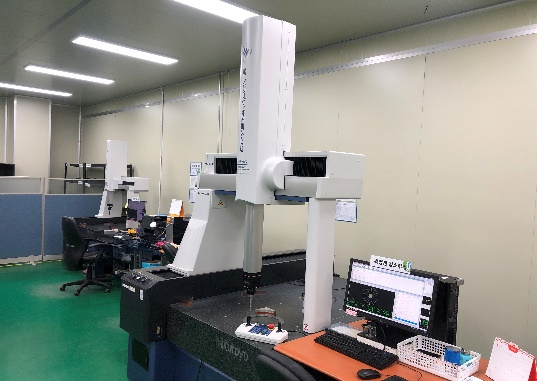
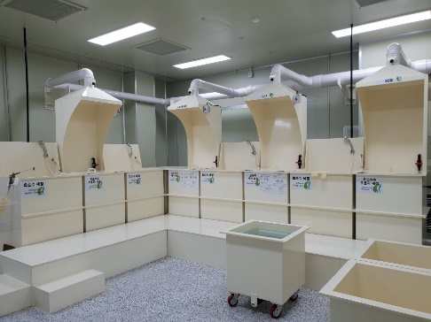
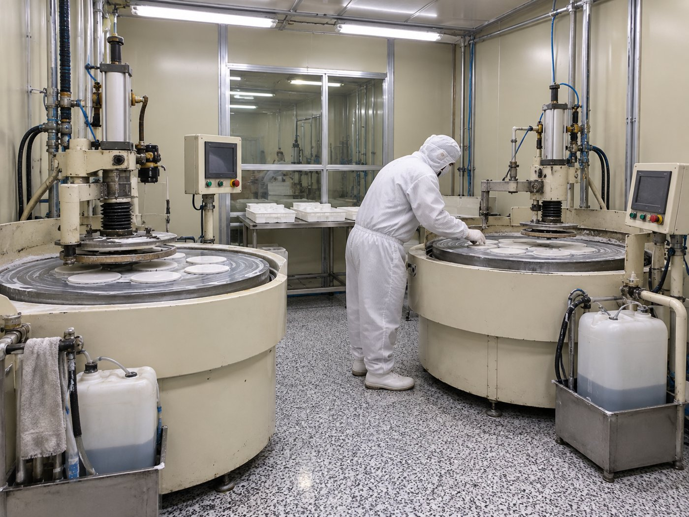
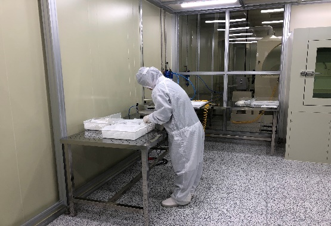

Business Model
반도체 전공정 핵심 부품
정밀 가공 기술
반도체 공정은 주로 고온·고압의 플라즈마 상태에서 증착과 식각이 이루어지는 환경입니다. 내식·내열·내화학 특성이 우수한 Si, SiC, CVD-SiC 소재가 주로 사용되며, 에칭공정용 부품은 수율과 공정 효율에 직접적인 영향을 미치기 때문에 부품 신뢰성과 고정밀 특성 확보가 매우 중요합니다. 엠아이비는 Micro Hole Drilling, Grinding, Lapping·Polishing, Cleaning 기술로 Etcher·CVD 장비의 핵심 부품을 개발·제조합니다.
Products
MATERIAL 01
Si (Silicon)
실리콘은 반도체 산업에서 가장 널리 사용되는 소재로, 우수한 전기적 특성과 높은 순도, 뛰어난 가공성을 갖추고 있습니다. 플라즈마 공정 환경에서 안정적인 특성을 유지하며, 정밀 가공이 가능하여 반도체 제조 장비의 핵심 부품으로 폭넓게 적용됩니다. 엠아이비는 고순도 Silicon 소재를 기반으로 복잡한 형상과 미세 공차가 요구되는 다양한 반도체 부품을 제작합니다.
- 고순도(High Purity)
- 우수한 가공성
- 높은 열전도성
- 우수한 플라즈마 내성
- 정밀 치수 구현


MATERIAL 02
SiC (Silicon Carbide)
실리콘카바이드는 높은 경도와 우수한 내마모성, 뛰어난 내열성을 갖춘 고기능성 세라믹 소재입니다. 고온 및 플라즈마 환경에서도 안정적인 물성을 유지하며, 우수한 내식성과 낮은 열팽창 특성으로 반도체·디스플레이 공정 장비에 널리 사용됩니다. 엠아이비는 SiC 소재의 고난도 정밀 가공 기술로 다양한 형상의 핵심 부품을 제작합니다.
- 우수한 내플라즈마성
- 높은 경도 및 내마모성
- 우수한 내열성
- 낮은 열팽창계수
- 뛰어난 내식성


MATERIAL 03
CVD SiC (Chemical Vapor Deposition SiC)
CVD SiC는 화학기상증착 공정으로 형성된 초고순도 실리콘카바이드 소재로, 일반 소결 SiC보다 치밀한 미세구조와 우수한 순도를 제공합니다. 파티클 발생이 적고 뛰어난 내식성과 내플라즈마 특성을 갖추고 있어 첨단 반도체 제조공정의 핵심 소재로 활용됩니다.
- 초고순도 소재
- 매우 우수한 내플라즈마성
- 낮은 Particle 발생
- 높은 치수 안정성
- 뛰어난 내식성


MATERIAL 04
Advanced Ceramic Materials
Advanced Ceramic Materials는 우수한 기계적 강도, 내열성, 내화학성, 절연성 및 고순도 특성을 바탕으로 반도체·디스플레이·태양광·광학 등 첨단 산업 분야에서 폭넓게 활용되는 핵심 소재입니다. 엠아이비는 Alumina(Al₂O₃), Quartz(SiO₂), Sapphire(Single Crystal Al₂O₃) 등 다양한 고기능성 세라믹 소재를 기반으로 고객의 요구에 최적화된 정밀 부품을 제작합니다.
- 우수한 기계적 강도
- 내열·내화학성
- 절연성
- 고순도
- 맞춤형 정밀 가공


Process
연삭 가공부터 세정·폴리싱·포장까지, 전 공정을 사내 설비로 수행합니다.







R&D — 기업부설연구소
LAB 01
난삭재 정밀 가공 기술
- 공구동력계를 활용한 휠 종류·Feed·절입량·RPM 조건별 가공 부하 분석
- 난삭재 가공 시 최적의 가공 조건 도출
- Wheel 종류·조건별 가공특성 분석을 통한 가공 휠 최적화 선정
- 표면 조도 분석과 광학 측정을 통한 가공 적합성 분석
LAB 02
미세홀 가공 기술
- 스텝 피드 조건에 따른 최적의 드릴링 조건 도출
- 칩 배출을 위한 최적 가공 깊이 분석
- Tool 강성을 고려한 절삭·이송속도 조건 연구
- 가공 조건별 미세 드릴 마모도·홀 표면 조도·단면 분석
LAB 03
설계 및 해석
- 열변형 구조해석을 통한 설계 안정성 확보
- 실제 공정 대비 가혹 조건을 반영한 안정성 마진 확보
- 응력분석을 통한 설계 취약부 사전 검증
- 홀·Slot 구조별 플라즈마 가스 유동 해석으로 공정 안정성 확보